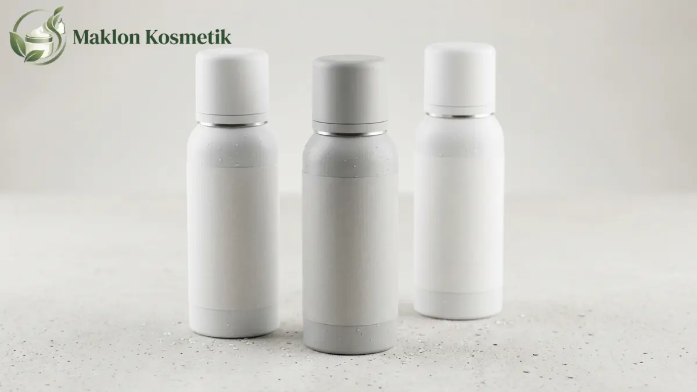

Bocoran Syarat Maklon Deodorant Spray Tahan Bau Badan 48 Jam

Daftar Isi Artikel Buka/Tutup
- Apa Itu Deodorant Spray dan Apa Bedanya dengan Antiperspirant?
- Berapa Batas Aluminium pada Deodorant Menurut BPOM?
- Apa Saja Syarat Regulasi Maklon Deodorant Spray?
- Bisakah Deodorant Spray Dijamin Tahan Bau Badan 48 Jam?
- Apa yang Harus Disiapkan Brand Sebelum Memesan Maklon?
- Apa Saja Risiko Keamanan Produk Deodorant Spray?
- Kesalahan Umum dalam Maklon Deodorant Spray dan Cara Mencegahnya
- Pertanyaan Umum (FAQ)
Ringkasan Poin Inti
- Deodorant semprot bekerja menekan bakteri pemicu aroma kurang sedap, berbeda dari antiperspirant penahan keringat.
- Kandungan garam aluminium pada formula antiperspirant dibatasi maksimal 20 persen menurut pedoman teknis BPOM.
- Pabrik maklon wajib mengantongi izin CPKB sediaan aerosol/semprot serta memfasilitasi notifikasi BPOM dan sertifikat halal.
- Klaim daya tahan 48 jam wajib ditopang uji efikasi panelis independen guna menghindari sanksi penyesatan klaim publik.
Apa Itu Deodorant Spray dan Apa Bedanya dengan Antiperspirant?
Deodorant spray adalah kosmetik semprot yang diformulasikan untuk menekan perkembangbiakan bakteri penyebab bau badan di area ketiak atau menyamarkannya dengan keharuman parfum.
Sementara itu, antiperspirant bekerja secara mekanis mengecilkan muara pori kelenjar keringat menggunakan garam aktif aluminium guna menghambat produksi keringat berlebih.
Perbedaan fungsi ini membawa konsekuensi regulasi dan pengujian yang berbeda. Brand perlu menetapkan sejak awal apakah produknya murni deodoran pencegah bau atau antiperspirant penahan basah.
Berapa Batas Aluminium pada Deodorant Menurut BPOM?
Publikasi ilmiah farmasi mencatat bahwa batas maksimal penggunaan garam aluminium dalam formulasi kosmetik yang ditetapkan BPOM adalah sebesar 20 persen.
Berbagai pengujian laboratorium terhadap sampel produk komersial menunjukkan kadar aluminium berkisar dari 0,003 persen hingga 4,63 persen, jauh di bawah ambang batas bahaya.
Pabrik maklon dan pemilik brand wajib memvalidasi kesesuaian konsentrasi bahan aktif ini sebelum mengunci formula akhir agar proses notifikasi izin edar tidak terkendala revisi.
Apa Saja Syarat Regulasi Maklon Deodorant Spray?
Maklon deodorant spray mensyaratkan perjanjian kerja sama dengan industri kosmetik yang sertifikat CPKB-nya mencakup bentuk sediaan semprot bertekanan.
Menurut Peraturan BPOM Nomor 21 Tahun 2022, sertifikat CPKB pabrik penerima kontrak harus memiliki sisa masa berlaku minimal enam bulan saat pengajuan akun notifikasi.
Selain izin BPOM, produk wajib mengantongi sertifikat halal resmi BPJPH. Titik kritis kehalalan meliputi asal pelarut alkohol denaturasi, senyawa pewangi, serta bahan pembawa lainnya.
Label kemasan botol kaleng juga wajib memuat instruksi cara pakai, peringatan bahaya mudah terbakar, dan nomor batch produksi yang dapat ditelusuri.
"Klaim daya tahan wangi 48 jam bukan sekadar angka pemanis pada label kaleng, melainkan janji efikasi yang wajib dibuktikan secara ilmiah melalui data uji panelis."
Bisakah Deodorant Spray Dijamin Tahan Bau Badan 48 Jam?
Klaim daya tahan 48 jam tidak boleh digaransi secara mutlak tanpa uji efikasi klinis, karena respons tubuh setiap individu sangat bervariasi bergantung aktivitas fisik dan metabolisme.
Langkah aman bagi pemilik merek adalah meminta laboratorium terakreditasi melakukan uji efikasi penilaian aroma badan (sniff test) secara objektif pada kondisi terkontrol.
Gunakan susunan kalimat klaim yang bertanggung jawab, misalnya membantu menjaga kesegaran hingga 48 jam, serta simpan seluruh lembar laporan uji sebagai dokumen pembuktian.
Apa yang Harus Disiapkan Brand Sebelum Memesan Maklon?
Brand perlu menentukan jenis wadah semprot yang diinginkan sejak awal, apakah berupa kaleng aerosol bertekanan gas atau botol pump spray cair tanpa propelan.
Siapkan profil aroma wewangian yang disukai (misalnya sporty segar, floral feminin, atau woody maskulin) serta preferensi bahan baku alami yang ramah kulit sensitif.
Alokasikan anggaran yang mencakup biaya sampel laboratorium, pengadaan kaleng cetak sablon, uji klaim efikasi, dan pembayaran uang muka sesuai kuota MOQ pabrik.
Apa Saja Risiko Keamanan Produk Deodorant Spray?
Produk sediaan aerosol memiliki karakteristik khusus yang mudah terbakar jika terpapar panas tinggi, sehingga pengemasan dan penyimpanan di gudang harus memenuhi SOP keselamatan ketat.
Kulit area ketiak sangat sensitif terutama sehabis bercukur, sehingga konsentrasi pewangi sintetis harus dikontrol agar tidak memicu rasa gatal atau peradangan dermatitis kontak.
Selain itu, ukuran partikel semprotan nozzle harus dirancang halus agar nyaman di kulit ketiak dan tidak menimbulkan kabut pekat yang mengiritasi saluran pernapasan saat disemprotkan.
Kesalahan Umum dalam Maklon Deodorant Spray dan Cara Mencegahnya
Kesalahan umum adalah memesan kaleng dalam jumlah besar sebelum formula dinyatakan stabil dan lolos uji kompatibilitas cairan terhadap lapisan dalam kaleng aluminium.
Pilihlah mitra pabrik yang memiliki fasilitas pengisian aerosol berstandar CPKB, mintalah ringkasan uji keamanan kulit, dan pastikan kepemilikan formula tertera tegas di dalam kontrak.
Ingin Mengembangkan Produk Deodorant Spray Brand Anda?
Wujudkan produk deodorant spray tahan lama dengan formula lembut di kulit, pengujian efikasi terstandarisasi, dan legalitas izin BPOM bersama Maklon Kosmetik ID.
Pertanyaan Umum (FAQ)

Meilita
Konsultan Formulasi & Pengembangan Produk di Maklon Kosmetik ID. Berpengalaman dalam pengembangan tekstur kosmetik dekoratif, uji stabilitas, dan regulasi izin edar terstandarisasi BPOM & Halal.